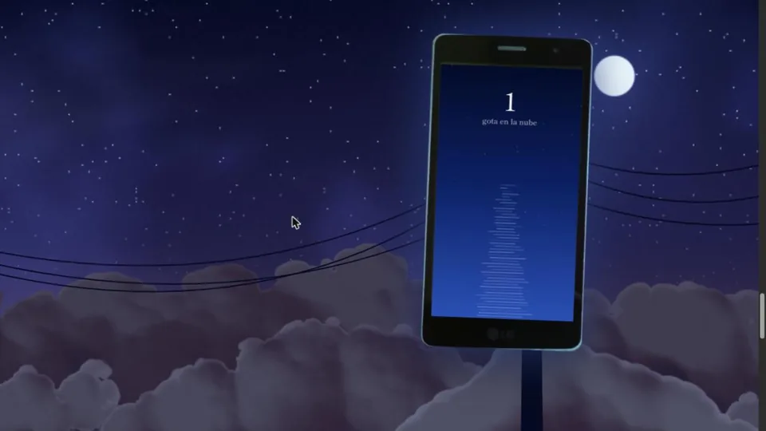

Una gota
6 of 6 drops landed on the real phone after waiting up to 64 minutes in the queue
This portfolio. A serverless IoT system on AWS: each visitor's drop travels through an API to a real phone from 2015, and a queue holds it while the phone is off.
Solo project: architecture, deployment and the phone client.
Amplify, API Gateway, Lambda, DynamoDB, S3, CloudWatch, IAM, WebGL